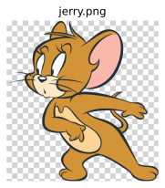

imgutils.ascii.drawing
ascii_drawing
- imgutils.ascii.drawing.ascii_drawing(img: str | PathLike | bytes | bytearray | BinaryIO | Image, max_width: int | None = Ellipsis, max_height: int | None = Ellipsis, resample=2, levels: str = '@%#*+=-:. ', aspect: float = 1.8)[source]
Generate ASCII art drawing based on the given image.
- Parameters:
img (ImageTyping) – The input image.
max_width (Optional[int]) – The maximum width of the ASCII art. If set to None or …, it will be automatically determined based on the terminal size.
max_height (Optional[int]) – The maximum height of the ASCII art. If set to None or …, it will be automatically determined based on the terminal size.
resample (int) – The resampling filter to use when resizing the image.
levels (str) – The characters used to represent different intensity levels in the ASCII art.
aspect (float) – Proportional correction for ASCII art output, which should approximate the aspect ratio of ASCII characters on your terminal. This value ensures that the aspect ratio of the output ASCII art is as close as possible to the original image. The default value is 1.8.
- Returns:
The ASCII art representation of the image.
- Return type:
str
- Examples::
Here is an image of jerry
>>> from imgutils.ascii import ascii_drawing >>> >>> print(ascii_drawing('jerry.png')) :=++: : =+===+: =: ++----== -*: ..:.. .::=*++++==+. =+-. :=++++++==: .:-*++++****+==+++=. .-++=====--::== .=*++++++++++++===+=. .=++==++=:::::::== :=+++====----===--=---==-=+=-=++-::::::::::*: .-***+=---==-=+++++=----=====--=*=::::::::::::*= :***+=++=---+=++=--=+----=-----+*-:::::::::::::++ .**+*+=-==---=+***=-==---------+*-::::::::::::::*+ =*==*===----=+=:.:+-=---------=*-:::::::::::::::#- ++=+: -=---=+- :+-----------++:::::::::::::::=#. +++. ==--=*- ++-----------=+:::-+::::::::::*+ -+= .+---+- -+=------------====+=:::::::::+#. .++. ==---+. :+=--------------==+=:::::::::=#- .:=*+.=---=*+ .==--------------=+=-:::::::::=#- .=++++==+======*= .=====------------==::::::::::+*- .#+==+:.=---+:..::-+++======-------=+:::::::::-*+: .....:**==+. :++=-. ..:++=======+=====-=+-:::::::-++- :*+=+. .. ..::*+====------====+=:::::-=+=: .=++=. . =*+==++===---=++=---===-: :=+=. -: .:=+++++++===*+-::::.. ... :::::. ..-=====+****+++*****+++=-::..-==-. .::.:--=++++++*#+==-==------======++++++-.. :============-----------------------====--:.. .. -+==+==--==--------------------------------=======+=: -*=-=+-+-==-===-----------===============----------==+- :*=--++.===:..-==-----==++++===-----=*++---=+=------===+- *+---++..::....:=+=--===+=. -==-.:+====-==-=++=- -#=--=++=+==-:....-+=-----===-:.. .===++=-. :=+==+. =#=------======-::::===------==++++=:. .-+==: ... -#=------------=====--=+==-------==++*+: -*=*: +*==--------------====+=-===--------==**=-++=*- -=+++========------=+=:..:===---------=*#+=+= ..:::+=::===---==+:.....:==---------=+#+. .=-..====++=+=.......==----------+#- ==:-===--=+-........+=----------+#- -+=:....::.........+=-----------=*- .+*=:............-+-------------=*: .=+=+++=-:::..::-=+=--------------=*: .=+=----==++++++++*++===-------------=+. ++=----------=+++=-:..:-=+==----------=+. .#=---------=++-. .-=+==--------==. ++---------+- .-=+==------==:. =+=-------+: .-=+=-----=========-. :-=++==-----=+- .-==----------===++ :++=====------=+. -+=--------==+++ -+=--------==++ :++==-------=+. .-=++++++**+-. :=+++++++=-.